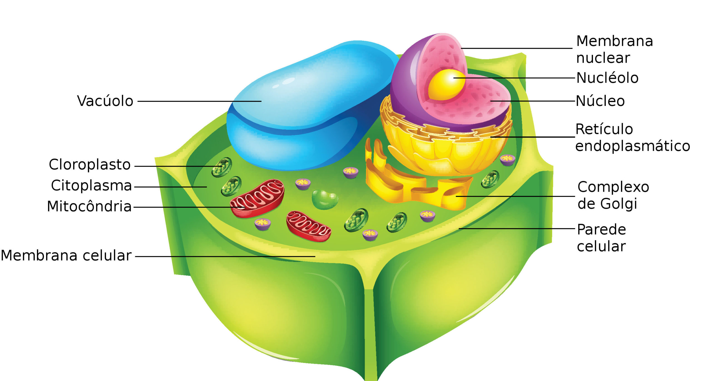
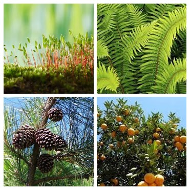
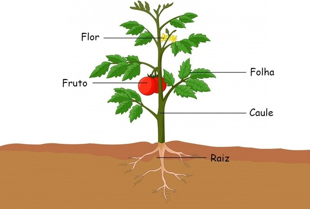
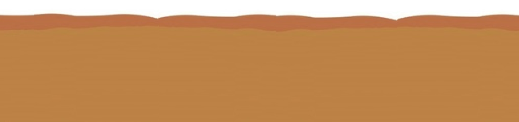
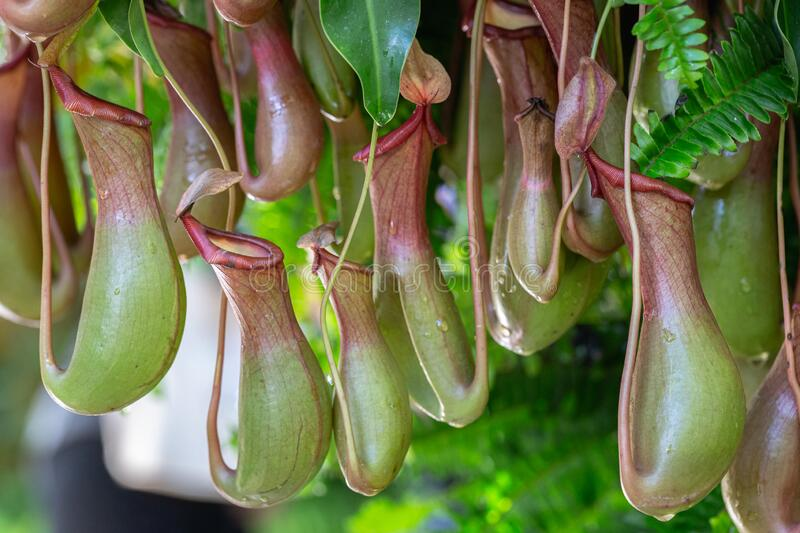
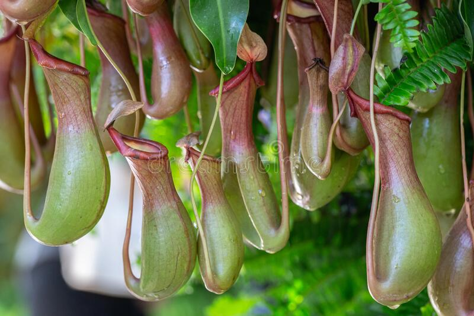

.png)
![]()
O QUE É A BIOWEB?

A BioWeb foi criada com o intuito de ajudar os estudantes do primeiro ano do CEFET MG na matéria de Biologia, mais especificamente na área de botânica, que é o foco do site. Na composição do projeto nós utilizamos a linguagem HTML, combinada com CSS e JavaScript. Com a orientação do professor Flavio Coutinho, responsável pela disciplina de Programação Web, juntamente com o professor Vitor Hugo, professor de Biologia do CEFET MG, nós reunimos as informações e criamos o site.
O QUE É BOTÂNICA?
A Botânica é a área da biologia que estuda o Reino Plantae, onde estão incluídos todos os vegetais. Nesse grupo encontramos seres autotróficos, eucariontes e multicelulares, ou seja, seres que produzem seu próprio alimento por meio da fotossíntese, apresentam células com núcleo delimitado pela carioteca e possuem mais de uma célula.

CARACTERÍSTICAS GERAIS
CÉLULA VEGETAL
As plantas são constituídas por células vegetais. Elas diferenciam-se das células animais por possuírem cloroplastos, vacúolos e parede celular. Os cloroplastos são organelas exclusivas de células vegetais. É o local onde é encontrada a clorofila, o pigmento necessário para a realização da fotossíntese. Os vacúolos são responsáveis por armazenar substâncias e regular a entrada de água na célula. A parede celular dos vegetais é constituída pelo polissacarídeo celulose. Ela é responsável pela sustentação, resistência e proteção contra patógenos.
LINHA CRONÓLOGICA DAS PLANTAS

- Briófitas: São o grupo mais simples das plantas, já que não possuem nem frutos, nem flores,
nem vasos condutores. Sua reprodução acontece a partir de metagênese, assim possuindo uma fase
sexuada e outra assexuada.
- Pteridófitas: Esse grupo é um pouco mais evoluído que as briófitas,
diferentemente das briófitas possuem vasos condutores, raiz, folhas e caule, porém sua reprodução ocorre
da mesma forma que o primeiro grupo.
- Gimnospermas: São o segundo grupo mais evoluído, ficando atrás apenas da angiospermas.
Devido à presença de flores e sementes isso possui uma maior variabilidade de espécies. Assim como as pteridófitas
este grupo possui vasos condutores, raiz, folhas e caule. Sua reprodução ocorre apenas sexuadamente.
- Angiospermas: Grupo mais evoluído no reino vegetal, possuem todos os elementos das
gimnospermas, além de terem frutos. As sementes das angiospermas possuem uma leve diferença que as das gimnospermas,
que é o fato de estas serem envolvidas pelo ovário. Esse grupo é o maior do reino vegetal, contendo mais de 200 mil
espécies.
PARTES DA PLANTA
As partes da planta são: raízes, folhas, caule, flores e frutos. Cada parte desempenha uma função importante para o vegetal, assim como os órgãos do corpo humano.
 - Raiz: na maioria das plantas, é subterrânea e apresenta como funções principais a fixação da planta ao substrato e a absorção e condução de água e sais minerais.
- Folhas: apresentam como função principal a realização de fotossíntese, sendo elas os órgãos em que está concentrada a maior quantidade de clorofila. Além disso, nas folhas também acontece respiração e transpiração.
- Caule: atua ligando as raízes às folhas, promovendo a sustentação do vegetal, o transporte de substâncias e permitindo que as folhas estejam dispostas de forma a conseguirem maior contato com a luz solar.
- Flores: são responsáveis pela reprodução da planta.
- Frutos: são, geralmente, resultado do desenvolvimento do ovário após a fecundação e em seu interior é encontrado as sementes. Assim, com a sua dispersão é garantido a sobrevivência da espécie.
CURIOSIDADES
 

- A maior espécie de árvore do mundo é a sequoia. Esta gigante é encontrada nos Estados Unidos e pode atingir até 110 metros de altura.
- As plantas carnívoras nepentáceas são as que possuem a capacidade de comer animais de maior tamanho. Encontradas nas florestas tropicais da Ásia, estas plantas podem comer mamíferos de pequeno porte, sapos e até passadores pequenos.
- A vitória régia é uma planta aquática que pode aguentar muito peso. Uma vitória-régia de grandes proporções pode aguentar até 40 kg (bem distribuídos pela superfície da folha).
- As plantas medicinais mais usadas no mundo são: camomila (matricaria camomila), babosa (aloe vera), guaco (mikania glomerata), quebra-pedra (phillanthus niruri), boldo (plectranthus barbatus) e gengibre (zingiber officinale).
Importância da Botânica
As plantas são fundamentais para a vida na Terra. Elas nos proporcionam alimento, combustíveis, oxigênio e são primordiais para a manutenção do clima e das chuvas no planeta. Saber como podemos melhorar esses princípios, ou como desfrutar deles é a chave para o estudo da botânica. Podemos separar quatro particularidades básicas sobre a importância das plantas para a nossa sobrevivência:

Alimentos
De forma direta (através do consumo de frutas, vegetais etc), ou de forma indireta (através da carne), pois são o alimento de alguns animais. Elas são essenciais para que haja vida.

Mudanças ambientais
O desmatamento, por exemplo, causa um grande impacto ambiental, uma vez que as plantas são responsáveis pela transformação do gás carbônico em oxigênio, ainda protegem matas ciliares e são abrigo para as mais diversas espécies de animais. Sem elas, há todo um desequilíbrio do ecossistema.

Remédios e materiais
As plantas, em sua maioria, trazem propriedades que funcionam como remédios naturais. Até mesmo os industrializados possuem plantas em suas composições, como é o caso da aspirina, que era produzida originalmente através da casca do salgueiro. Outros materiais, como o algodão, a madeira, os óleos, também são extraídos a partir das plantas.

Processos fundamentais
É possível estudar através das plantas processo fundamentais, como subdivisão celular ou síntese das proteínas, sem bater de frente com os dilemas éticos que se formam ao estudar animais ou humanos. Foi justamente dessa forma que o botânico Gregor Mendel descobriu as leis da herança genética, ao cruzar diferentes espécies de ervilhas.